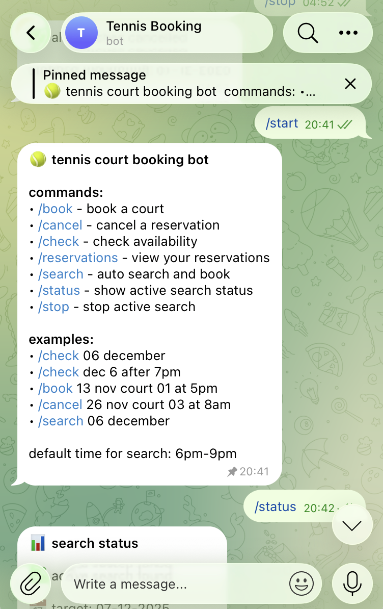
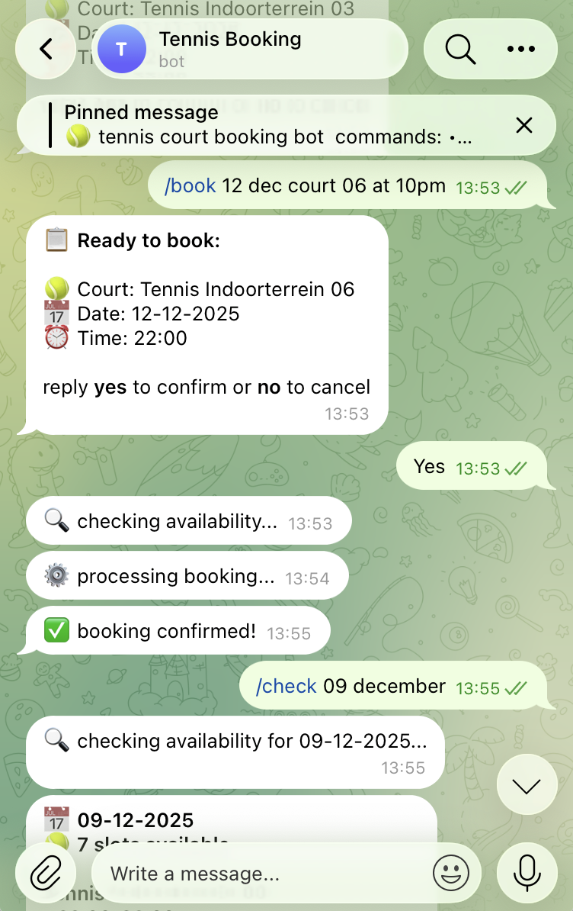
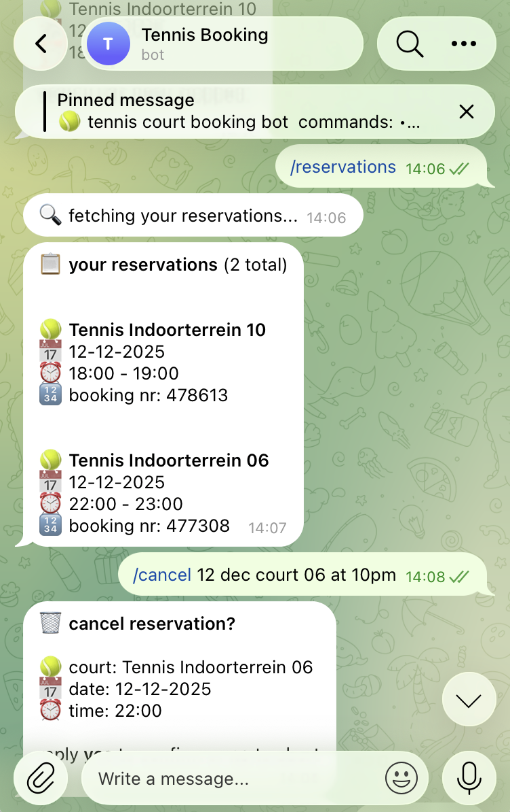
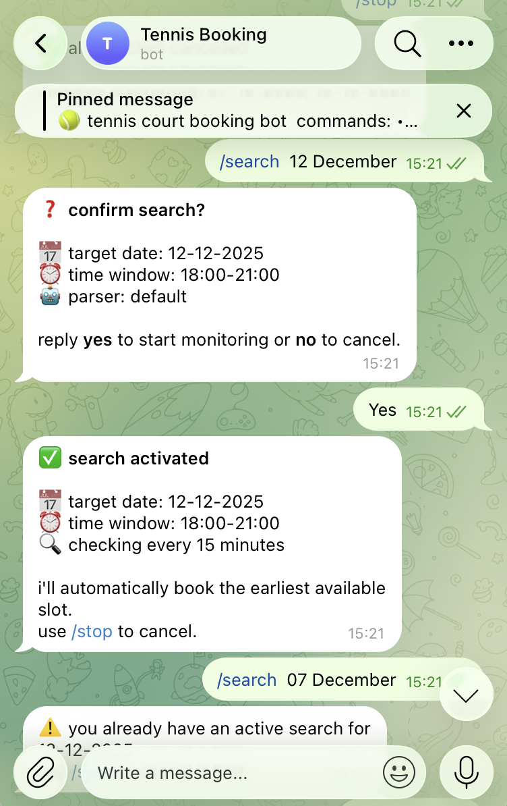

Tennis Court Booking Bot
A personal chat bot that checks, books, and auto-hunts tennis courts in Ghent. Designed as a conversation and built end-to-end with AI tools.

A personal chat bot that checks, books, and auto-hunts tennis courts in Ghent. Designed as a conversation and built end-to-end with AI tools.
Booking a public court in Ghent runs through a clunky city website — one I'd already picked apart in my City of Gent Sports Booking case study. So this time I asked a different question: what if booking didn't need the website at all?
This is conversational UX doing its job. Booking a court used to mean working through the Stad Gent website screen by screen; now it's a short exchange with a chat bot on Telegram. Here's the difference where it counts — the number of moves between "I want a court" and "it's booked."
| Approach | Taps | Screens | Hands-on |
|---|---|---|---|
| Stad Gent website | ~14 | 8 | ~2 min |
| Chat bot | 3 | 1 | ~15s |
Walked the real booking task end-to-end and logged every tap, reload, and re-entered choice.
Stripped it down to what actually defines a booking: when — and that's nearly it. The rest are defaults the system should hold for me.
Scripted the conversation so the bot asks only what it can't assume, and confirms in one clear step.
Shipped it for myself and refined the wording against real bookings until it felt effortless.
A chat interface has no buttons, layout, or visual hierarchy to lean on. Every design decision lives in the wording, the order of messages, and the moments where the bot pauses to check in with me. These were the interaction-design choices I cared about most.
Even as the only user, I didn't want to memorise anything to use my own bot. A chat has no buttons to explore, so I made the words do the work.

Booking and cancelling cost real money and a real slot — so I never let them happen on the first message.

The conversation covers the whole booking lifecycle — not just making a reservation, but reviewing and undoing one too.

I didn't want to keep refreshing the site for a free court, so I let the bot do it. I give it a date, and it looks every 15 minutes — then books the first evening slot it finds.

One real booking on my own phone, from request to confirmation — with the design decisions marked.
Plays the booking back — court, date and time — so I catch a misread before anything happens.
Nothing books without a plain "yes" — the only irreversible step is always mine to approve.
It narrates each step — checking, processing, confirmed — so a pause never feels like it broke.
I'm a designer, not a backend engineer — but AI tools let me take this from idea to a running service. I used them as a pair-builder: describing the behaviour I wanted, reading and steering the code, and making the product decisions myself. The interesting part is that the same skill that makes a good conversation with the bot makes a good conversation with an AI coding tool — being precise about intent, edge cases, and what "done" means.
Under the hood: the bot runs serverless and scales to zero, so it costs nothing to keep around (it lives in the cloud's free tier). A scheduler wakes it every 15 minutes to run active searches. Because the city has no public API, the booking itself is done by browser automation that logs in and clicks through the real site, and a natural-language model interprets the messier date/time phrasings. My login stays in a secrets manager — never in the code.
Automating someone else's website deserves judgement, not just enthusiasm. Before building, I did real due diligence and scoped the project so it stays squarely personal and fair.
One account, my own legitimate credentials, for booking courts I actually play on. No reselling, no profit, no second users.
I reviewed the city's website terms and sales conditions. Reselling and account abuse are prohibited — automation for personal use is not.
One user, polling at a calm 15-minute cadence with retry limits — designed to behave like a patient human, not to hammer the site.
Login details live in a secrets manager and are git-ignored — never committed to the repo, never shown in the interface.
I now book courts by sending one message, and most weeks I don't even do that — I let /search find the slot for me. The whole thing runs in the background at no cost. A few things stuck with me: